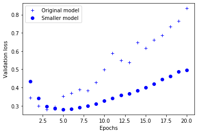
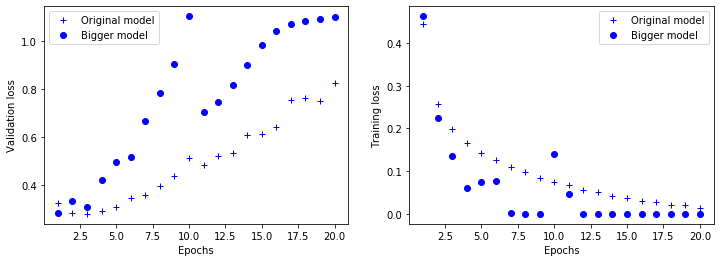
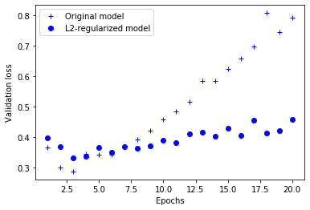
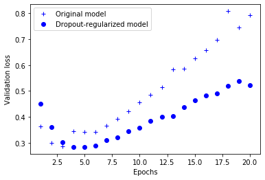

神经网络过拟合与正则化
Boylad · 2019-11-29
Deep learning models tend to be good at fitting to the training data, but the real challenge is generalization, not fitting.
这里我们使用IMDB数据集作为测试，介绍一些神经网络中过拟合问题的处理方法。数据预处理部分，参考这里。
from keras.datasets import imdb
import numpy as np
import matplotlib.pyplot as plt
from keras import models
from keras import layers
(train_data,train_labels),(test_data,test_labels) = imdb.load_data(num_words=10000)
def vectorize_sequences(sequences, dimension=10000):
results = np.zeros((len(sequences), dimension))
for i, sequence in enumerate(sequences):
results[i, sequence] = 1.
return results
x_train = vectorize_sequences(train_data)
x_test = vectorize_sequences(test_data)
y_train = np.asarray(train_labels).astype('float32')
y_test = np.asarray(test_labels).astype('float32')
缩小网络规模1
防止过拟合最简单的办法是减少模型的capacity。下面是original_model与smaller_model在验证集上损失的表现（较低的验证损失表示模型更好）。
original_model = models.Sequential()
original_model.add(layers.Dense(16, activation='relu', input_shape=(10000,)))
original_model.add(layers.Dense(16, activation='relu'))
original_model.add(layers.Dense(1, activation='sigmoid'))
original_model.compile(optimizer='rmsprop',
loss='binary_crossentropy',
metrics=['acc'])
smaller_model = models.Sequential()
smaller_model.add(layers.Dense(4, activation='relu', input_shape=(10000,)))
smaller_model.add(layers.Dense(4, activation='relu'))
smaller_model.add(layers.Dense(1, activation='sigmoid'))
smaller_model.compile(optimizer='rmsprop',
loss='binary_crossentropy',
metrics=['acc'])
original_hist = original_model.fit(x_train, y_train,
epochs=20,
batch_size=512,
validation_data=(x_test, y_test))
smaller_model_hist = smaller_model.fit(x_train, y_train,
epochs=20,
batch_size=512,
validation_data=(x_test, y_test))
epochs = range(1, 21)
original_val_loss = original_hist.history['val_loss']
smaller_model_val_loss = smaller_model_hist.history['val_loss']
plt.plot(epochs, original_val_loss, 'b+', label='Original model')
plt.plot(epochs, smaller_model_val_loss, 'bo', label='Smaller model')
plt.xlabel('Epochs')
plt.ylabel('Validation loss')
plt.legend()
plt.show()

可以看到，smaller_model比original_model晚2个epoch才开始出现过拟合，之后smaller_model性能的下降（损失增加）速度要慢得多。接下来我们训练一个容量更大的网络：
bigger_model = models.Sequential()
bigger_model.add(layers.Dense(512, activation='relu', input_shape=(10000,)))
bigger_model.add(layers.Dense(512, activation='relu'))
bigger_model.add(layers.Dense(1, activation='sigmoid'))
bigger_model.compile(optimizer='rmsprop',
loss='binary_crossentropy',
metrics=['acc'])
bigger_model_hist = bigger_model.fit(x_train, y_train,
epochs=20,
batch_size=512,
validation_data=(x_test, y_test))
bigger_model_val_loss = bigger_model_hist.history['val_loss']
original_train_loss = original_hist.history['loss']
bigger_model_train_loss = bigger_model_hist.history['loss']
plt.plot(epochs, original_val_loss, 'b+', label='Original model')
plt.plot(epochs, bigger_model_val_loss, 'bo', label='Bigger model')
plt.xlabel('Epochs')
plt.ylabel('Validation loss')
plt.legend()
plt.plot(epochs, original_train_loss, 'b+', label='Original model')
plt.plot(epochs, bigger_model_train_loss, 'bo', label='Bigger model')
plt.xlabel('Epochs')
plt.ylabel('Training loss')
plt.legend()
plt.show()

如上图所示，容量更大的网络几乎是一开始就过拟合了，并且在训练集上损失也是很快就接近0。
权重正则化1
l2(0.001)意味着当前层的权重矩阵中每个系数将为网络总损失增加0.001*权重系数。正则只在训练时添加到网络中，因此测试时网络的损失将更高些。
from keras import regularizers
l2_model = models.Sequential()
l2_model.add(layers.Dense(16, kernel_regularizer=regularizers.l2(0.001),
activation='relu', input_shape=(10000,)))
l2_model.add(layers.Dense(16, kernel_regularizer=regularizers.l2(0.001),
activation='relu'))
l2_model.add(layers.Dense(1, activation='sigmoid'))
l2_model.compile(optimizer='rmsprop',
loss='binary_crossentropy',
metrics=['acc'])
l2_model_hist = l2_model.fit(x_train, y_train,
epochs=20,
batch_size=512,
validation_data=(x_test, y_test))
l2_model_val_loss = l2_model_hist.history['val_loss']
plt.plot(epochs, original_val_loss, 'b+', label='Original model')
plt.plot(epochs, l2_model_val_loss, 'bo', label='L2-regularized model')
plt.xlabel('Epochs')
plt.ylabel('Validation loss')
plt.legend()
plt.show()

同样的网络架构，同样的参数，L2正则确实能减轻过拟合。也可以使用以下两种正则方式：
from keras import regularizers
regularizers.l1(0.001) # L1正则化
regularizers.l1_l2(l1=0.001, l2=0.001) # 同时L1和L2正则化
Dropout正则化1
对某一层使用dropout，就是在训练过程中随机将该层的一些输出特征舍弃(设置为0)。dropout比率是被设为0所占的比例，通常在0.2~0.5范围内。测试时没有单元被舍弃，而该层的输出值需按照dropout比率缩小，因为这时比训练时有更多的单元被激活，需要加以平衡。
dpt_model = models.Sequential()
dpt_model.add(layers.Dense(16, activation='relu', input_shape=(10000,)))
dpt_model.add(layers.Dropout(0.5))
dpt_model.add(layers.Dense(16, activation='relu'))
dpt_model.add(layers.Dropout(0.5))
dpt_model.add(layers.Dense(1, activation='sigmoid'))
dpt_model.compile(optimizer='rmsprop',
loss='binary_crossentropy',
metrics=['acc'])
dpt_model_hist = dpt_model.fit(x_train, y_train,
epochs=20,
batch_size=512,
validation_data=(x_test, y_test))
dpt_model_val_loss = dpt_model_hist.history['val_loss']
plt.plot(epochs, original_val_loss, 'b+', label='Original model')
plt.plot(epochs, dpt_model_val_loss, 'bo', label='Dropout-regularized model')
plt.xlabel('Epochs')
plt.ylabel('Validation loss')
plt.legend()
plt.show()

可见，Dropout正则化也显著提高了网络的拟合能力。防止过拟合的常用方法：
- Getting more training data.
- Reducing the capacity of the network.
- Adding weight regularization.
- Adding dropout.
-
本文整理自：Deep Learning with Python ↩︎